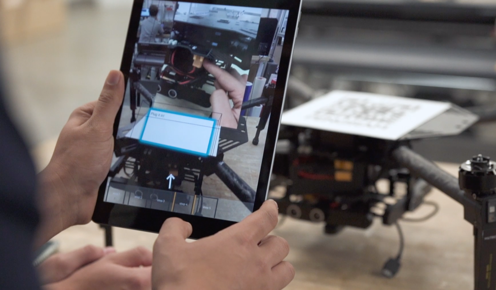
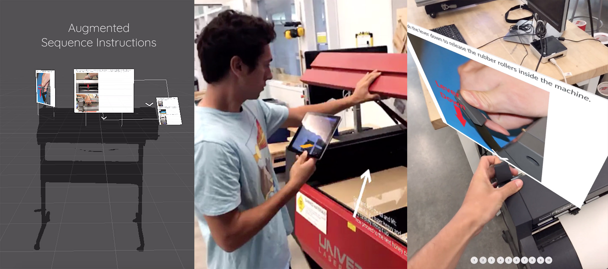
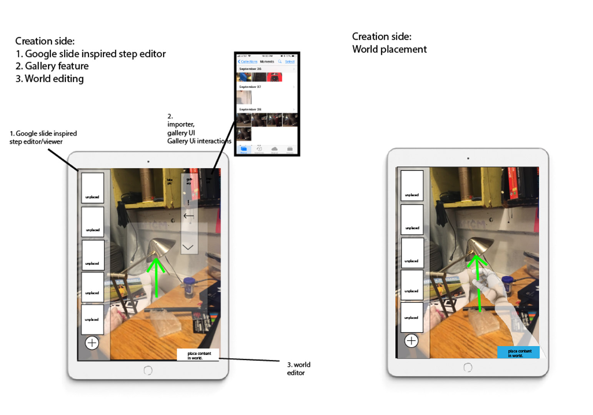
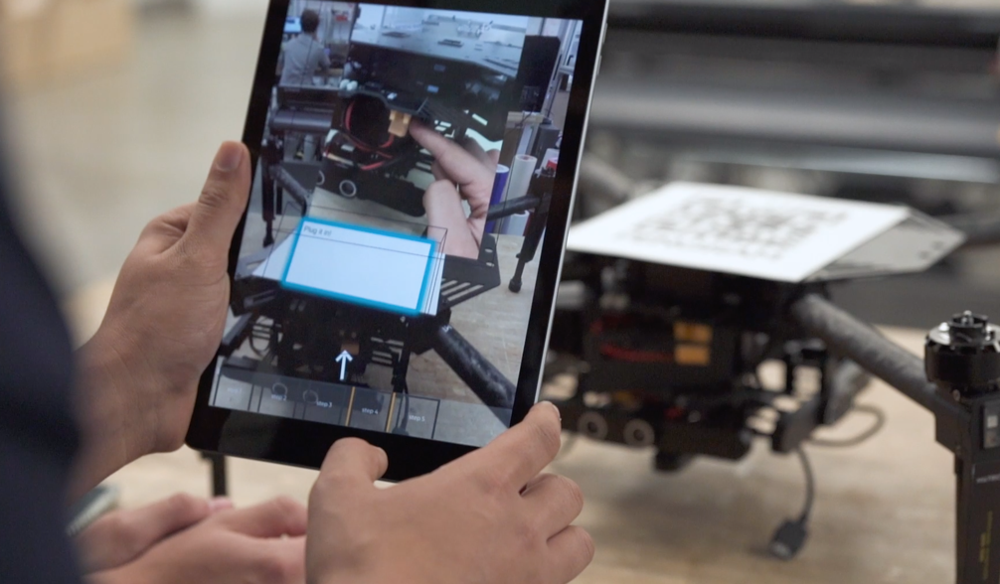

|  |

|
After half a year of building out the PengramAR hololens application, I had the nagging feeling it wouldn't work in the long run. I kept pushing everyone to try and think about it from a design and business perspective: to think about the big picture usability of the application. My feeling was that the user friction involved with using a dual VR/AR tool for Hololens and Oculus VR was simply too much to have a viable product. I wanted us to explore Mobile AR as the platform to use as the future of Pengram. MobileAR, as opposed to Hololens, had the potential to be fully ubiquitous, and buying into the Apple AR ecosystem had the potential for growth as they released better software and hardware.
I still go back and think about these product conversations we had at these critical moments. The people I was working with on this project were some of the smartest people I've met in my life. Some of them were pushing for us to keep building the Hololens AR/VR app, with the premise that after 3-5 years and enough venture capital it could really be something. I think at the end of the day, we were both right, I was just more stubborn than them.
After a long discussion, I got the go ahead to build the first prototype for our “Augmented Sequence Instructions". At this point I was pretty involved in a makerspace on campus, and there were a variety of machines with sequences of steps that required spatial movement of parts. Designing a simple AR learning sequence over them was a reasonably straightforward exercise. Simply place the step over the relevant location, click next to do the next step.
|  |
Where we did things right here as far as product design went, was to get the actual makerspace instructional designers involved in the process. Ultimately, we were looking to solve their problem, not just build some cool AR stuff. Ultimately, the issue for the instructional designers was content creation: being able to pump out high quality instructional content for machines with updated instructions and safety procedures was annoying and hard. Our next pass of the AR app kept this in mind, and we focused on making an application that would be easy to create instructions within.
I led a white boarding session at the end of that week, and in a couple hours we had designed the creation side of the application. We tried to boil it down to it’s absolute essentials. The fact you could put it onto a single page felt like we had succeeded in coming up with a simple and usable design for creation and consumption of AR instructions. Although I am at heart a UX brutalist, I am occasionally prone to excess. My favorite unnecessary feature in this iteration was this virtual hand that was supposed to help make it easy to place objects.
|  |
We pitched the idea to the Jacob Catalyst Grant program, and recieved 3,000 dollars to build the application of the course of the semester.
We allocated work, and then started building. By the end of the semester, we had an application that could easily make and deliver AR instructions. We delivered it to Jacobs hall and called it a day.
|  |
|
|
After some work, we turned our research into a paper and submitted it to the International Symposium of Academic Makerspaces. We traveled to Yale and presented at a poster session, receiving a variety of interest from both makerspace owners and professors interested in our approach.
The video of the AR Instructions Application is here.
The timing on our final release was weird. We finished the application at the very end of the semester, when everyone was leaving school. This was effectively the end of Pengram, as no one felt strong enough to give up their cushy tech jobs for a startup that had not yet proven itself. Bryce and Vedant went to work at Apple in their AR division, Lear went to Google, and Luke went to facebook. Before everyone split though, Will, our CEO, announced he wanted to apply to YCombinator. We had one final sit down dinner over Korean BBQ, and we sat down and hashed out a viable business vision for what the product could be.
I've always been good at telling stories, so I helped them write one that could work. We imagined that every consumer appliance came with a Pengram QR code on it: and that by downloading our app, a person could have a perfect set of AR instructions that came with their machines. We'd start in the makerspace market with laser cutters and 3D printers, and eventually work down to coffee machines and IKEA furniture. It was a vision that sounded compelling, and still sounds compelling to me. YCombinator loved it, and Will, Bill, and Charles went off to do the program as the rest of us split to go on with our lives.